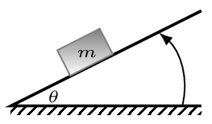
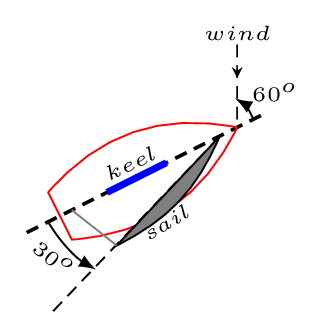
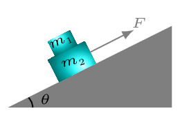

A 25 kg water bucket is hanging at the middle of a perfectly horizontal plastic wire on a clothes line stretched between two poles 6.0 m apart. The bucket in the center of the wire depressing it by a distance of 4.0 cm. Find the tensions in each wire.
A light rope 2 m in length suspends a weight of 200 N. A horizontal force \(X\) is then applied at the midpoint of the rope, swinging the midpoint 0.5 m to the side and raising the weight somewhat.
A mountaineer weighing 200 lb with his equipment traverses a canyon 100 ft wide using a rope which stretches to become 120 ft long (between the knots anchoring each end of the rope to the canyon walls at equal heights).
When the mountaineer reaches the half-way point across the canyon, what is the tension in the rope?
A heavy rope of weight w is hung between two hooks at equal heights. The weight is distributed uniformly along the rope as it sags between the two hooks. The angle that the rope makes with the horizontal at the left hook is \(\theta\text{.}\)
In terms of $w$ and \(\theta\text{,}\) what is the angle that the rope makes with the horizontal at the right hook? Why?
A 10-kg block of wood rests on the top of a 20-kg block which rests on a horizontal surface. The lower block is then pulled to the right at constant speed by a horizontal force while the top block is pulled to the left by a massless string passing over a massless, frictionless pulley back to the second mass as shown below. If the coefficient of kinetic friction between all surfaces is 0.25.
A 10-kg block of wood is placed on a plank 3 m long with one end raised slowly as shown in figure below. If the coefficient of static friction between block and plank is 0.3 and the coefficient of kinetic friction is 0.2,

what is the tilt angle of the plank when the block first starts moving?
How large a force parallel to the plank would be required to make the block move up the plane at constant speed if the tilt angle is \(30^{o}\text{?}\)
How large a force parallel to the horizon would be required to make the block move up the plane at constant speed if the tilt angle is \(30^{o}\text{?}\)
Weight \(w_{1} = 20 N\) slides to the right at constant speed along a rough horizontal surface while weight \(w_{2} = 10 N\) moves downward as shown in the figure below. If the strings and pulleys are massless and frictionless, find
A sail boat weighing 1000 lb including contents is sailing at a constant speed of 10 mph into a wind of 20 mph as shown below. The angle between the keel of the boat and the wind is \(60^{o}\text{,}\) and the angle between the sail and the keel is \(30^{o}\text{.}\) Assume that the force of the air on the sail is perpendicular to the sail, that the force of the water on the keel is perpendicular to the keel, and that the friction of the boat through the water is 100 lb.

With what force does the wind push against the sail?
A box of mass 100 kg is pushed across the floor by a man pushing with 500 N northward and a boy pushing 200 N eastward. If the coefficient of sliding friction is 0.2, what is the magnitude and direction of the acceleration of the box.
Two blocks are sliding down an inclined plane in contact with one another as shown in the figure below. Block A has a mass of 3 kg while block B has a mass of 2 kg. The coefficient of sliding friction between A and the surface is 0.3 while that between the B and the surface is 0.2. What is the magnitude of the minimum force between the two blocks?
A block of mass \(m_{1}\) = 20 kg rests on a plane inclined at an angle \(\theta = 30^{o}\text{.}\) It is attached by a thin string run over a massless, frictionless pulley to a hanging weight of unknown mass \(m_{2}\text{.}\) If the coefficient of static friction is 0.25 and of kinetic friction is 0.1, determine the values of the mass \(m_{2}\) which will
A block of mass \(m_{1}\) = 10 kg rests on top of a larger block of mass \(m_{2}\) = 20 kg which rests on a plane inclined at an angle \(\theta = 15^{o}\text{.}\) The coefficient of static friction between all surfaces is 1/3 and that of kinetic friction is 1/4. A constant force F parallel to the plane is applied to \(m_{2}\) accelerating it up the plane.

What is the maximum acceleration of \(m_{2}\) which will allow m1 to stay with it?
A large block A of mass 10 kg is resting on a horizontal surface. A second block B of mass 100 g is placed against the side of the first block and the whole system is accelerated to the right by a force P pushing on the back side of A. If the horizontal surface is frictionless but the vertical surface between A and B has a coefficient of static friction of 0.3, find
A block of mass \(m_{1}\) = 10 kg rests on top of a frictionless horizontal surface as shown in the figure below. All pulleys and strings in the figure are frictionless and massless. Mass \(m_{2}\) is 5 kg.
Two boxes (X=2kg) and (Y=5kg) are connected through a massless spring and are placed on a frictionless surface. If the acceleration of the box X is \(5m/s^{2}\text{,}\) find the acceleration of the box Y, if a 30N force is being applied horizontally on the box X to move them on the ground.
A ball is dropped from a height of 100 m. If the friction due to air resistance is proportional to the velocity according to the equation \(f = cv,\) where c = 0.3 Ns/m. Determine the time taken by the ball to hit the ground. How fast is the ball going when it hits the ground if the mass of the ball is
A projectile with air resistance: A projectile of mass 1 kg is shot into the air with an initial velocity of 100 m/s at an angle of \(60^{o}\text{.}\) If the air resistive force is proportional to the velocity and directed opposite the velocity with a proportionality constant of c = 0.0, 0.01, 0.1, 1.0 N.s/m, in each case find
An airplane traveling at 40 m/s pulls out of a dive in a circle of radius 200 m. How many g’s of force does the pilot experience at the bottom of the pull-out?
A child of mass 50 kg is standing at the edge of a playground merry-go-round of diameter 3 m. Other children push the merry-go-round faster and faster until the first child’s feet begin to slip.
If the friction between shoes and rotating surface is 0.2, how long does it take the merry-go-round to make one revolution?
A car traveling at 80 mph rounds a curve of radius 50 m which is banked for a speed of 50 mph. What is the minimum coefficient of friction that would keep the car on the road?
A small sphere of mass m is dropped from a great height. After it has fallen 100 m, it has attained its terminal velocity and continues to fall at that speed. Calculate the work done by air friction against the sphere during the first 100 m of fall.
A man of weight 200 lb is sitting at one end of a canoe of weight 60 lb which is 10 ft long and at rest in the water. If the man walks to the other end of the canoe how far does the canoe move through the water? (Assume the water has no friction.)
To weigh a fish, a person hangs a fish at a point \(\frac{1}{4}\) of the length of a rigid rod which is suspended by a rope attached to its center. If there is 3.5 kg mass is hanging at one end near to fish and a 5 kg mass is hanging at another end to balance the system. What is the weight of the fish.
A 60 kg man and his 40 kg dog are sitting together at the left end of a 8.0 m long boat. The boat is 100 kg, and its center of mass lies at the geometric center. The boat starts out at rest in the middle of a calm lake. Ignore all friction and water resistance throughout this problem.
Where is the center of mass of the boat + man + dog system? Consider the origin of coordinates lies at left end of the boat.
Suppose that the dog moves to the other end of the boat, while the man stays still. How far does the boat move and in which direction? (left or right).
After reaching the other end of the boat, the dog jumps off with a horizontal velocity of 2.0 m/s, directed to the right, as measured relative to the water. What is the speed with which the boat and the man drift in the opposite direction?
A system consists of three balls. Ball 1 has a mass of 2 kg and is located at (-2cm,0); ball 2 has an unknown mass and is located at (4cm,3cm); ball 3 has a mass of 1 kg and is located at (x,y). The center of mass of the system is located (0,2cm). Calculate the mass ball 2 and find the location of ball 3.
Given the vectors \(\vec{P} = 3 \hat{i} + 4\hat{j}\) and \(\vec{Q} = 2\hat{i}+ 2\hat{k}\text{,}\) find a vector of unit length perpendicular to both \(\vec{P}\) and \(\vec{Q}\text{.}\)
A uniform sheet of metal in the shape of a hemisphere of radius 1 m is used as a sign. The hemisphere has a mass of 200 kg and is suspended by two vertical wires attached to points along its horizontal diameter. One wire is attached to the left end of the diameter and the other is attached to a point three-quarters of the way to the other end.
Write the torque equation for the left end of the diameter.
A ladder 10 m long and weighing 200 N is placed against a frictionless wall with its base 6 m from the bottom of the wall. If the coefficient of static friction between the floor and the bottom of the ladder is 0.2, how far up the ladder can a man weighing 800 N climb before the base of the ladder starts to slip?
A gate of height 1 m, length, 2 m, and weight 400 N is hinged at points A and B as shown in the figure below. The tension T in a support cable making an angle of \(30^{o}\) is adjusted until the horizontal force at hinge A is zero. Find
A uniform block of weight 10 N, height 20 cm, and base 10 cm is placed base down on a horizontal plane 1 m long resting on a table. The coefficient of static friction is 0.3 and that of kinetic friction is 0.2. One end of the plane is slowly raised until the block either tips over or begins sliding.
A wheel of diameter 0.6 m and weight 100 N is pushed over a curb of height 10 cm by a horizontal force F. What is the magnitude of this force if it is applied
If the bowling ball weighs 25 N is lying between two inclined planes which make an angle \(40^{o}\) and \(50^{o}\) with the horizontal. what is the value of the normal exerted on each point of tangency? Each surface is frictionless.
A rope is supporting a 200 kg uniform beam which is 10 m long. One end of the beam is hinged at a wall and the other end of supports a 1000 kg load. The rope is attached to the end of the beam and makes an angle of \(30^{o}\) with the horizontal beam. What is the tension in the rope?
A 3 m long stepladder is hinged at point C and spreads on the frictionless floor. The ladder is massless and has a 1m tie rod, BD fixed at halfway up. A man weighing 800N is standing at 2.75 m along the ladder. Find